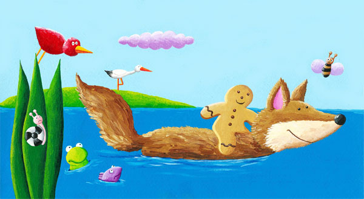
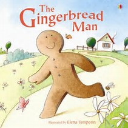

The Gingerbread Man

The Gingerbread Man is a famous story that is very dear to kids all over the world. Here, we have this story as a launching pad for reading and listening comprehension activities, that are immensely important in learning English. After you read the story, click on the links given below, to access the listening and reading comprehension, as well as the vocabulary building exercises.
Once there lived an old man, an old woman, and a little boy. One day, the old woman was baking bread. With the dough that was left over, she made a Gingerbread Man with the little boy’s help. The old woman made the shape of the Gingerbread Man. The boy put two black currants as his eyes, and a red cherry as the nose, a crescent-shaped apple slice as the smiley mouth, and three grapes as three buttons on his shirt.
Then the old woman popped the Gingerbread Man into the oven, and went out to the garden. The little boy waited by the oven. He was very hungry.
After a while, the oven door opened suddenly, and the Gingerbread Man leapt out! The boy was amazed. The Gingerbread Man ran towards the door and raced down the garden.
The boy could not believe his eyes, but he soon yelled out, “Help! The Gingerbread Man is getting away!”
The Gingerbread Man2

The Gingerbread Man is a famous story that is very dear to kids all over the world. Here, we have this story as a launching pad for reading and listening comprehension activities, that are immensely important in learning English. After you read the story, click on the links given below, to access the listening and reading comprehension, as well as the vocabulary building exercises.
Once there lived an old man, an old woman, and a little boy. One day, the old woman was baking bread. With the dough that was left over, she made a Gingerbread Man with the little boy’s help. The old woman made the shape of the Gingerbread Man. The boy put two black currants as his eyes, and a red cherry as the nose, a crescent-shaped apple slice as the smiley mouth, and three grapes as three buttons on his shirt.
Then the old woman popped the Gingerbread Man into the oven, and went out to the garden. The little boy waited by the oven. He was very hungry.
After a while, the oven door opened suddenly, and the Gingerbread Man leapt out! The boy was amazed. The Gingerbread Man ran towards the door and raced down the garden.
The boy could not believe his eyes, but he soon yelled out, “Help! The Gingerbread Man is getting away!”
The old man, who was repairing his lawn mower, and the old woman, ran after the Gingerbread Man, shouting and screaming. The little boy joined them. So all three began to chase the Gingerbread Man.
However, the Gingerbread Man, still racing, shouted to them,
“Run! Run! As fast as you can! But you cannot catch me. I am the Gingerbread Man!”
Soon, a spotted dog saw the Gingerbread Man and joined in the chase. He barked, “If I catch you, I will gobble you up.”
A hungry crow flying overhead saw the Gingerbread Man, and she also wanted to take a bite. “I will get you and munch on you,” she screeched.
She joined the little boy, the old man, the old woman, and the dog in chasing the Gingerbread Man.